2. Viaje por el noroeste de España
2. Viaje por el noroeste de España
18 a 22 de agosto de 2021
Santa Eulalia de Bóveda
Santa Eulalia de Bóveda
Día 0, Lugo en 1 día
10 de septiembre de 2019

Dos años antes de hacer este viaje visitaba Lugo. Antes de entrar en Lugo pasaría por un pueblo desconocido por muchos que guarda un gran tesoro. Ese pueblo es
Bóveda de Mera el cual alberga la iglesia de santa Eulalia de Bóveda.
En el se encuentra el arco de herradura más antiguo de la península. Debajo de
la iglesia de Santa Eulalia, hace no muchos años se descubrió que debajo de la iglesia existía otra planta. Esa planta ratifico que la iglesia se edifico sobre un templo visigodo y que antes había
un templo romano.
Se sabe que en esa zona había varias aldeas romanas debido a la calidad de las aguas termales y curativas de la zona. El templo estaba dedicada a la diosa Cibeles y existen pinturas que se han conservado perfectamente debido a que el templo estuvo oculto bajo el suelo. Esas pinturas tratan sobre aves y corresponderán a la época clásica romana. Se cree que el templo funcionaría como lugar de sacrificio de toros para algún ritual antiguo.
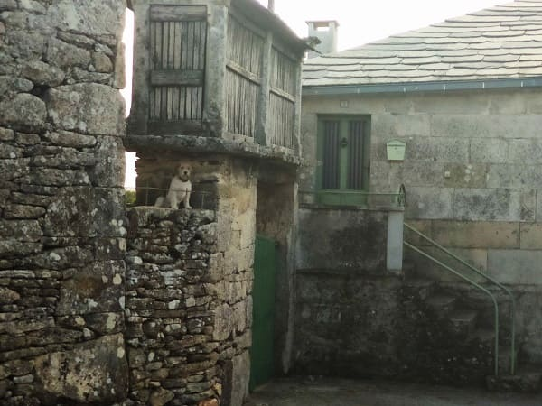
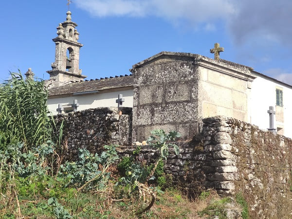
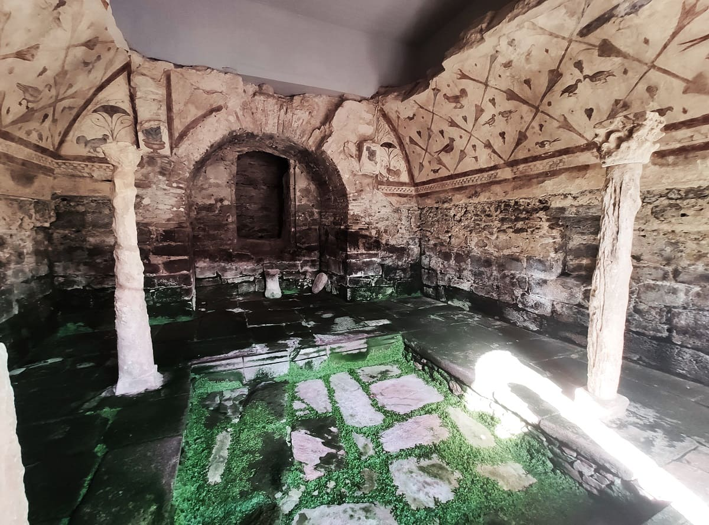
33. Lugo
33. Lugo
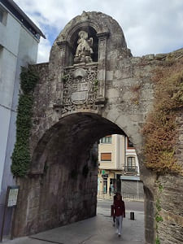
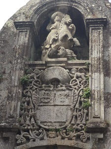
Lugo es de origen romano, fue fundada en el año 25 a. C. por Paulo Fabio Máximo y es la más antigua de Galicia. Construida en las cercanías de un castro, en la época romana recibió el nombre de Lucus Augusti. Numerosos restos romanos, muchos de ellos conservados en el Museo Provincial, son testimonio de sus primeros años de historia, especialmente su muralla romana, única en el mundo, que conserva todo su perímetro, y que fue declarada Patrimonio de la Humanidad en 2000. Dista de la costa 85 km, aunque su provincia tiene mar.
A lo largo de su historia experimentó tanto épocas de abandono como importantes momentos en la historia del país, desde la reunión en el año 842 de un gran ejército para conquistar Oviedo y entronizar a Ramiro I hasta el pronunciamiento del coronel Miguel Solís que daría comienzo al levantamiento de 1846 contra el presidente Narváez. Lugo ostenta el título de La Muy Noble y Leal Ciudad.
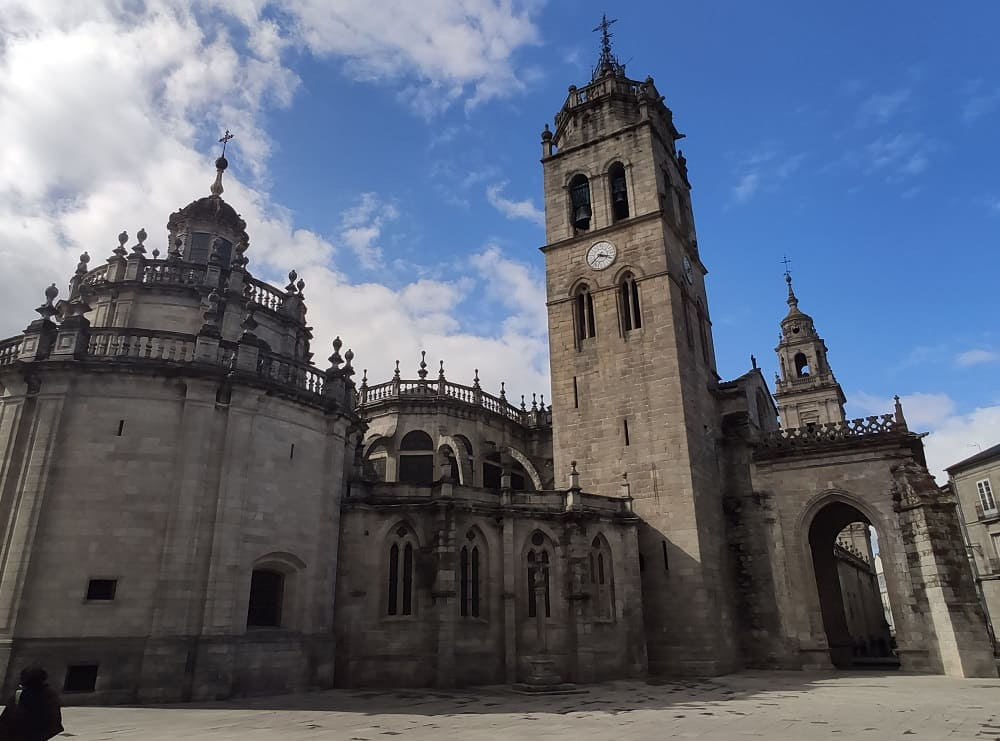
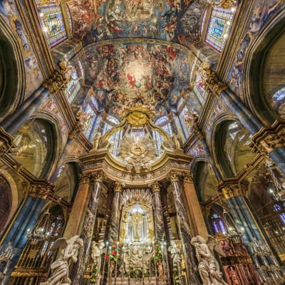
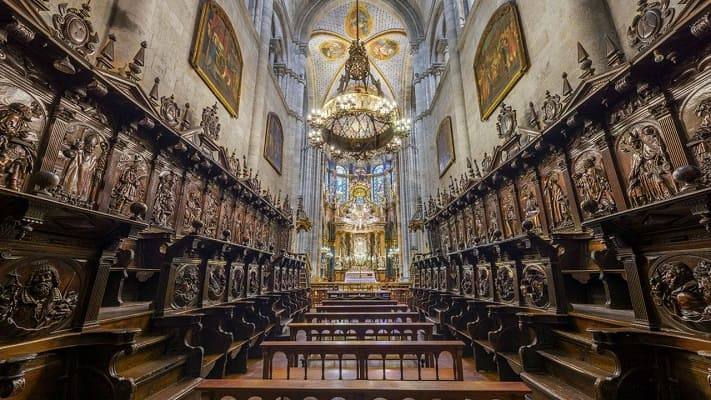
La catedral de Santa María de Lugo fue levantada sobre un templo anterior, posiblemente de origen romano, siendo uno de los más importantes de aquella época. Se encuentra en la parte suroreste de la muralla. No se conoce nada hasta el siglo IX donde el rey leones de aquel entonces utilizaría el modelo anterior para eregir la catedral de Oviedo que se empezó en aquella fecha, que era una de las capitales del reino y donde empezaría la reconquista. La catedral se comenzaría a principios del siglo XII debido a las condiciones del antiguo templo y es por ello que es de estilo románico, sobre todo si se ve por la parte trasera del abside.
Lo más destacado es el retablo mayor que debido a caerse en el terremoto de Lisboa se decidiría dividirlo en dos partes, uno a cada parte de la misma. Tiene estructura de cruz latina.
La nave mayor se cubre con bóveda de cañón apuntado y los laterales con bóveda de cañón y arista, de nervios en el crucero, y bóveda de cañón con lunetos en el triforio. Las ventanas del triforio son de arco agudo o apuntado al interior y al exterior. A la izquierda de la entrada a la catedral está la Torre Vieja, gótica, rematada por un cuerpo de campanas renacentista, obra de Gaspar de Arce. En la Plaza de Santa María, en la cabecera de la catedral, se ubica un crucero de fecha desconocida, en el tramo que va entre la torre-campanario y la capilla de la Virgen de los Ojos Grandes.
La catedral tiene varios estilos en su interior, ya que tardo en acabarse varios siglos. Es románico la mayor parte de la estructura del interior así como el exterior que es lo primero que se acabaría.
De estilo gótico es la girola y la capilla mayor, así como las capillas adosadas a la girola.
De estilo renacentista otra parte de la capilla mayo.
De estilo barroco la sala capitular, el claustro y la capilla central de la girola de la virgen de Ojos Grandes.
La fachada principal a diferencia del resto del exterior se remodelaría en el siglo XVIII y es de estilo neoclásico cuyas torres se terminarían en el siglo XIX.
Otros elementos destacables son el coro del siglo XVII y la custodia del siglo XVI.
De la portada de la puerta Norte destaca el pantocrator en mármol del siglo XII, una de las partes más antiguas de la catedral donde esta representada la última cena.
Al lado de la catedral por la puerta norte se encuentra
el palacio episcopal en la misma plaza de santa María. Si continuamos hacia el norte de la catedral podemos ver
la fuente de San Vicente y la oficina de turismo donde nos pueden guiar por la ciudad.
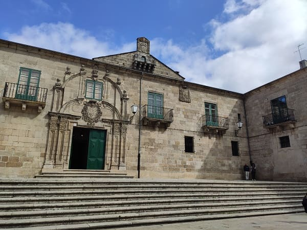
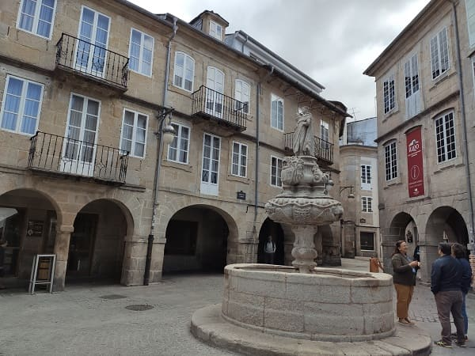
Después de ver la catedral visitaré
la plaza Mayor donde se encuentra el ayuntamiento de la ciudad que es un muy bonito edificio del siglo XVIII, de estilo barroco muy recargado de detalles. Culmina el mismo la torre del reloj que no contrasta con el estilo del ayuntamiento pero le da un toque moderno.
En esta plaza hay varios edificios públicos y varios palacetes, así como el círculo de artes. Destacan en la plaza dos esculturas romanas recordando el pasado romano de Lugo.
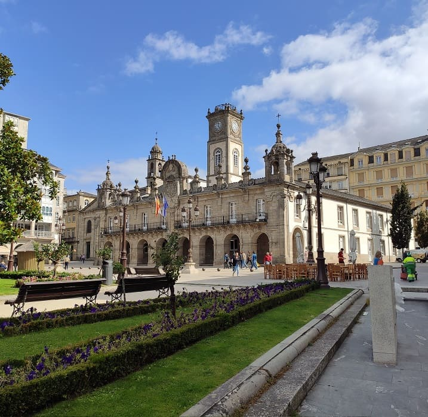
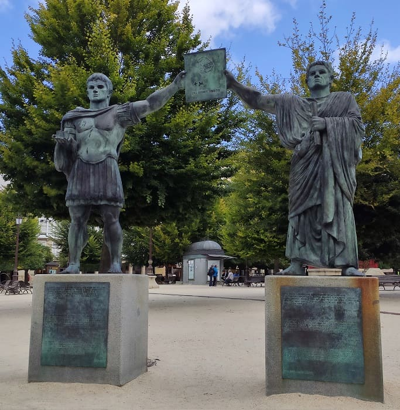
No muy lejos se encuentra
la iglesia de Santiago la Nueva. Esta iglesia era la del convento de las monjas dominicas. Esta reformado todo en el siglo XX si bien las ventanas y las puertas son originales. El convento con la desamortización pasaría a tener distintos usos como correos, hacienda o la diputación. Hoy en día funciona como iglesia.
Seguidamente caminando por las calles se llega a la amplia
plaza de santo Domingo donde se encuentra el monolito que conmemora
el bimilenario de la ciudad de Lugo, siendo una de las grandes ciudades más antiguas de la península.
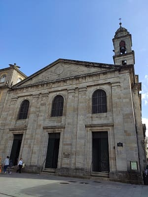
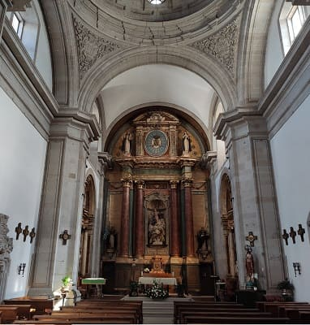
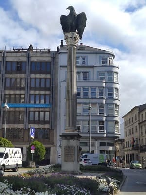
La segunda iglesia más importante después de la catedral es
la iglesia de san Pedro. Esta iglesia es de estilo gótico del siglo XIV. Con grandes vidrieras en el ábside final y destaca por tener varias capillas de gran valor y sepulcros del siglo XV donde descansan varios miembros de la nobleza lucense.
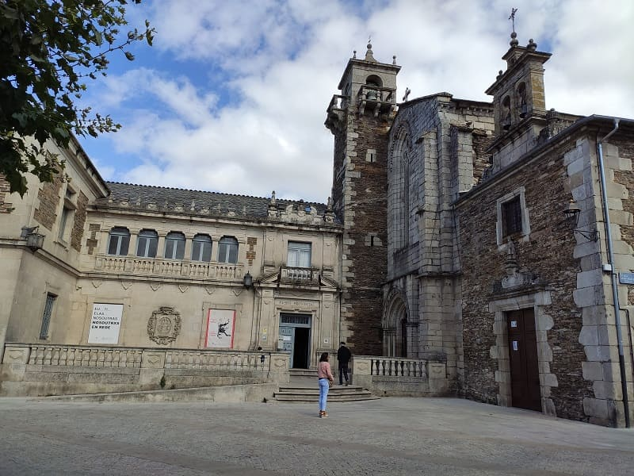
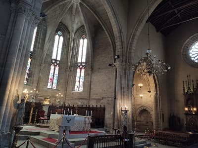
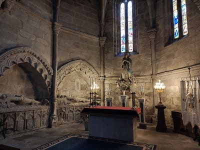
Dando una vuelta más hacia la parte noroeste del casco histórico podemos ver
la iglesia de san Froilán, de estilo barroco y el palacio de San Marcos que hoy alberga la diputación provincial de Lugo, ubicada en una de las grandes plazas y espacios de la ciudad.
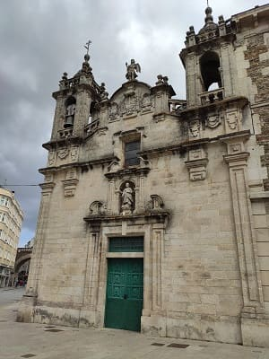
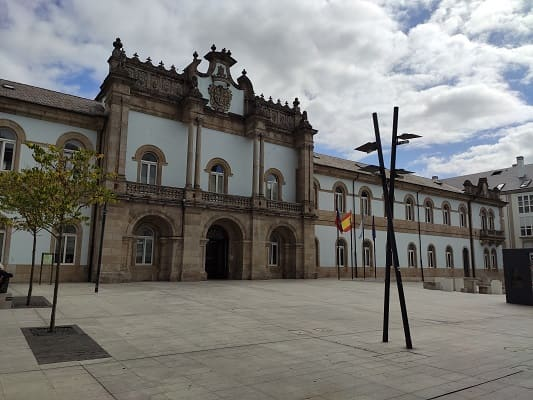
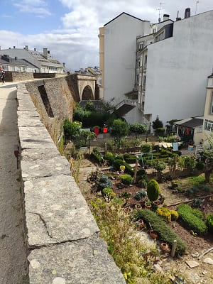
Por último recorrer sus extensas murallas que dicen ser las más largas conservadas de la época romana en la península.
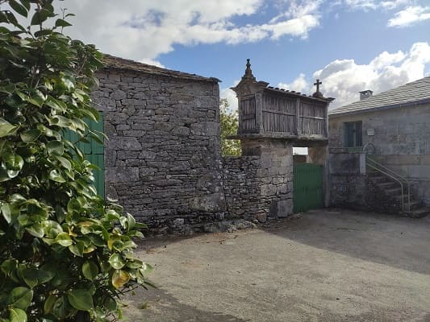
Entrada a Boveda de Mera.
5
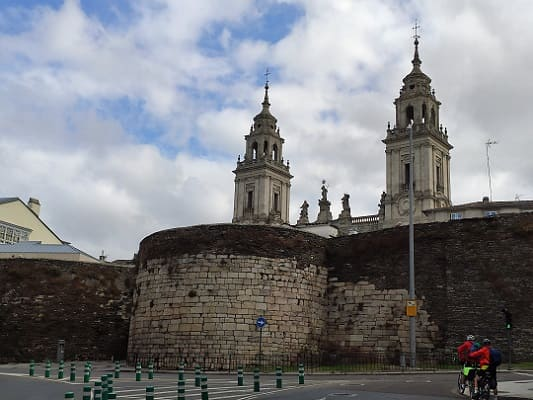
Murallas y catedral de Lugo.
6
Día 1, visitas por el Bierzo (CLICK para continuar)
20 de agosto de 2021

![[Valid RSS]](https://www.onepointsync.com/wp-content/uploads/2016/08/valid-rss-rogers.png "Validate my RSS feed")